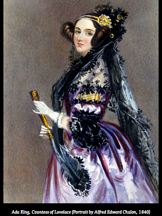

Você já ouviu falar em Ada Lovelace? Essa condessa da imagem, retratada em pintura feita por Alfred Edward Chalon em 1840, é considerada a primeira programadora da história!

Hoje, dia 10 de outubro, é considerado o Dia de Ada Lovelace. A data é celebrada desde 2009, sempre na segunda terça-feira do mês de outubro. É uma celebração das conquistas femininas em áreas que até hoje são dominadas por homens, como ciência, tecnologia, engenharia e matemática.
O evento foi criado pela britânica Suw Charmam-Anderson, que é tecnóloga social, escritora e jornalista, e reúne acontecimentos em todo o mundo.
Em 1842, Ada se tornou a primeira pessoa a programar (como fazemos hoje com computadores), ao acrescentar algoritmos para funcionamento de uma máquina mecânica.
Filha do poeta Lord Byron, a condessa de Lovelace era matemática e contribuiu com a tradução de um artigo científico, acrescentando mais dados ao mesmo. A programadora nasceu em 10 de dezembro de 1815.